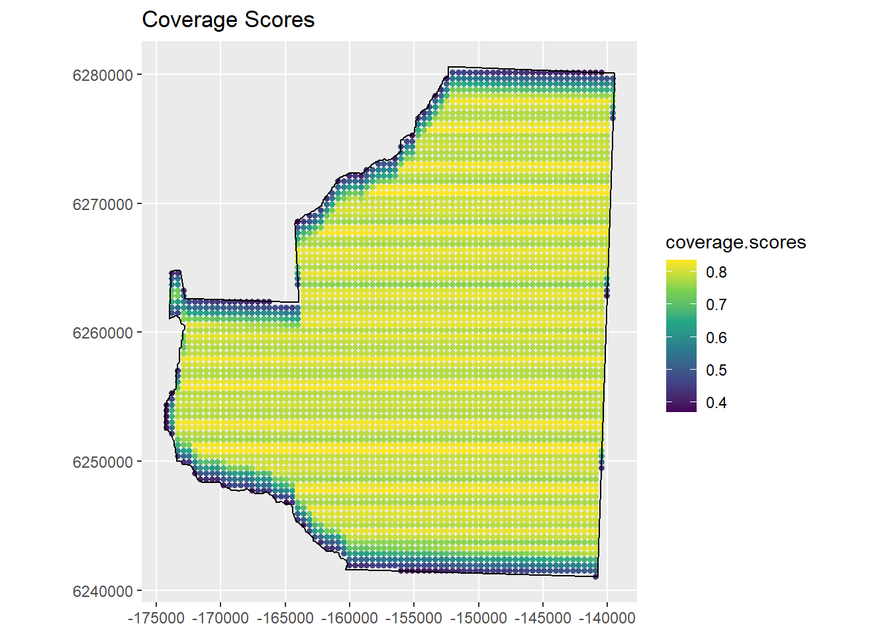
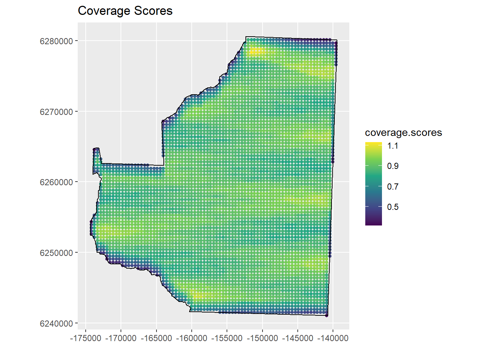
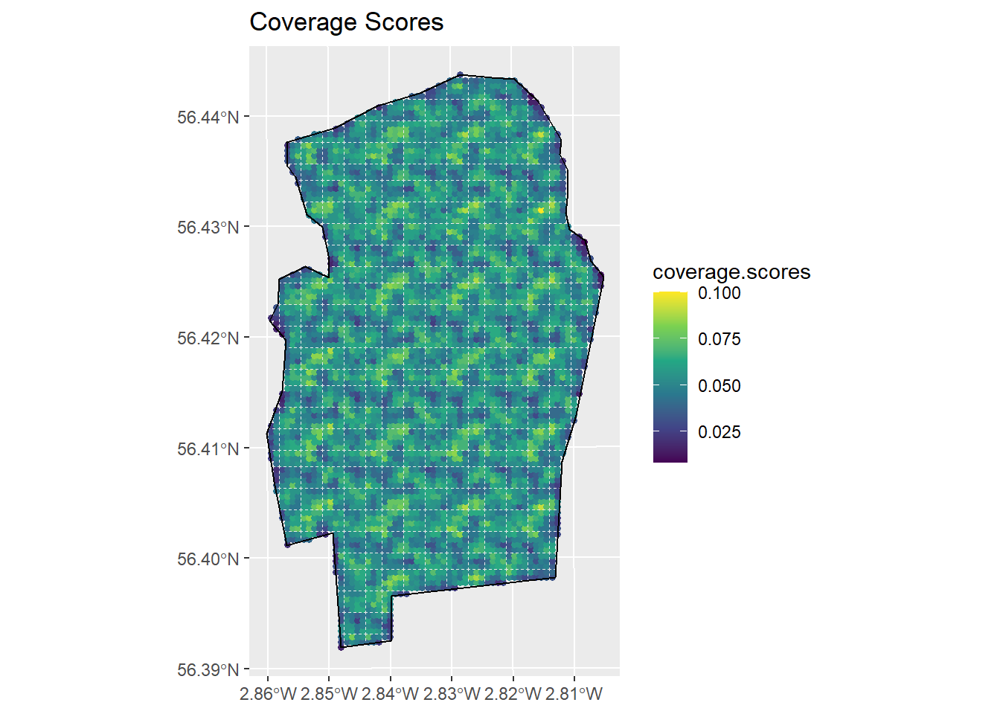

Linking to GEOS 3.11.2, GDAL 3.7.2, PROJ 9.3.0; sf_use_s2() is TRUEDistance sampling survey design solution
Solution
Distance sampling survey design
Systematic parallel line aerial survey of marine mammals in St Andrews bay
Systematic Parallel Line Design
Answers
What spacing would you select for this design? What is the maximum trackline length for the design you have selected? What on-effort line length are we likely to achieve?
The spacing chosen by
dssdof 4937.5m to generate a line length of 200km resulted in a maximum trackline length of around 261km (each exact answer will vary due to the random generate of surveys). If we choose this design then it is possible that when we randomly generate our survey we may not be able to complete it with the effort we have available.
We should therefore increase the spacing between the transects and re-run the coverage simulations. A spacing of 5000m gave a maximum trackline length of around 249km (see summary table of Trackline length in the output below) so we can be fairly confident that we will be able to complete any survey which we randomly generate from this design. This spacing should allow us to achieve an on-effort line length of 199km (see Line length section of design summary below). The minimum line length we would expect to achieve is 184km and the maximum is 206km. [Note your values might differ to those below]
shapefile.name <- system.file("extdata", "StAndrew.shp", package = "dssd")
region.sab <- make.region(region.name = "St Andrews Bay",
units = "m",
shape = shapefile.name)
cover.sabay <- make.coverage(region.sab, n.grid.points = 5000)
design.spacing5km <- make.design(region = region.sab,
transect.type = "line",
design = "systematic",
spacing = 5000,
design.angle = 90,
edge.protocol = "minus",
truncation = 2000,
coverage.grid = cover.sabay)design.spacing5km <- run.coverage(design.spacing5km, reps = 250, quiet=TRUE)
plot(design.spacing5km)
Strata St Andrews Bay:
_______________________
Design: systematically spaced transects
Spacing: 5000
Number of samplers: NA
Line length: NA
Design angle: 90
Edge protocol: minus
Strata areas: 987500079
Region and effort units: m
Coverage Simulation repetitions: 250
Number of samplers:
St Andrews Bay Total
Minimum 7.0 7.0
Mean 7.9 7.9
Median 8.0 8.0
Maximum 8.0 8.0
sd 0.3 0.3
Covered area:
St Andrews Bay Total
Minimum 725958409 725958409
Mean 761888043 761888043
Median 767391438 767391438
Maximum 778634413 778634413
sd 15651735 15651735
% of region covered:
St Andrews Bay Total
Minimum 73.51 73.51
Mean 77.15 77.15
Median 77.71 77.71
Maximum 78.85 78.85
sd 1.58 1.58
Line length:
St Andrews Bay Total
Minimum 184446.63 184446.63
Mean 197888.25 197888.25
Median 199119.48 199119.48
Maximum 205774.00 205774.00
sd 5917.77 5917.77
Trackline length:
St Andrews Bay Total
Minimum 220534.33 220534.33
Mean 242554.64 242554.64
Median 246237.52 246237.52
Maximum 248778.16 248778.16
sd 8224.54 8224.54
Cyclic trackline length:
St Andrews Bay Total
Minimum 251950.06 251950.06
Mean 279355.02 279355.02
Median 283828.05 283828.05
Maximum 285964.52 285964.52
sd 9626.55 9626.55
Coverage Score Summary:
St Andrews Bay Total
Minimum 0.35600000 0.35600000
Mean 0.77156543 0.77156543
Median 0.78800000 0.78800000
Maximum 0.85200000 0.85200000
sd 0.08596836 0.08596836Equal Spaced Zigzag Design
Answers
Does this design meet our survey effort constraint? What is the maximum total trackline length for this design? What line length are we likely to achieve with this design? Is this higher or lower than the systematic parallel design?
You were asked to then run a coverage simulation and check if the trackline length was within our effort constraints. I found the maximum trackline length to be 242km (see Trackline length summary table in the output below) so within our constraint of 250km. I then got a mean line length of 221km and minimum and maximum line lengths of 212km and 227km, respectively (see Line length summary table in the output below). We can therefore expect to achieve just over 20km more on-effort survey line length with the zigzag design than the systematic parallel line design - 10% gain. [Note your values may differ]
design.zz.4500 <- run.coverage(design.zz.4500, reps = 250, quiet=TRUE)
# Plot coverage
plot(design.zz.4500)
Answers
Do you think the coverage scores look uniform across the study region? Where are they higher/lower? Why do you think this is?
You were finally asked to look at the coverage scores across the survey region to see if this design has even coverage. There are some points with lower coverage around the survey region boundary. This is actually down to the fact we are using a minus sampling strategy. If we plotted coverage scores from a systematic parallel design we would see a similar pattern. Usually edge effects from minus sampling are minor unless we have a very long survey region boundary containing a small study area. If the fact that we are using a zigzag design was causing us issues with coverage we would expect to see higher coverage at the very top or very bottom of the survey region (as our design angle is 0). We do not see this. The survey region boundaries at the top and bottom are both quite wide and perpendicular to the design angle, in this situation zigzag designs perform well with regard to even coverage.
Point Transect Bird Survey in Tentsmuir Forest
Answers
What are the analysis implications of a design with unequal coverage?
As our two strata have different coverage we should analyse them separately. We therefore need to make sure that we have sufficient transects in each strata to perform an analysis - ideally 20. There are two reasons that we should analyse them separately. Firstly, our covered area will not be representative of the study area as a whole. If density is higher or lower in one strata than the other we will get a biased estimate of abundance for the area as a whole using the standard distance sampling estimators. Secondly, pooling robustness between the two strata will no longer apply and it may be the case that detection functions differ between the two strata. We will no longer have a representative sample of observations across the entire study region either.
Coverage
Organise the study area shape file.
shapefile.name <- system.file("extdata", "TentsmuirUnproj.shp",
package = "dssd")
sf.shape <- read_sf(shapefile.name)
st_crs(sf.shape)Coordinate Reference System:
User input: WGS 84
wkt:
GEOGCRS["WGS 84",
DATUM["World Geodetic System 1984",
ELLIPSOID["WGS 84",6378137,298.257223563,
LENGTHUNIT["metre",1]]],
PRIMEM["Greenwich",0,
ANGLEUNIT["degree",0.0174532925199433]],
CS[ellipsoidal,2],
AXIS["latitude",north,
ORDER[1],
ANGLEUNIT["degree",0.0174532925199433]],
AXIS["longitude",east,
ORDER[2],
ANGLEUNIT["degree",0.0174532925199433]],
ID["EPSG",4326]]Create the coverage grid.
cover.tm <- make.coverage(region.tm, n.grid.points = 5000)
design.tm <- make.design(region = region.tm,
transect.type = "point",
design = "systematic",
samplers = c(25,15),
design.angle = 0,
edge.protocol = "minus",
truncation = 100,
coverage.grid = cover.tm)
survey.tentsmuir <- generate.transects(design.tm)
Strata Main Area:
__________________
Design: systematically spaced transects
Spacing: 751.2295
Number of samplers: 25
Design angle: 0
Edge protocol: minus
Covered area: 775261.3
Strata coverage: 5.49%
Strata area: 14108643
Strata Morton Lochs:
_____________________
Design: systematically spaced transects
Spacing: 218.3674
Number of samplers: 15
Design angle: 0
Edge protocol: minus
Covered area: 414517
Strata coverage: 57.95%
Strata area: 715264.9
Study Area Totals:
_________________
Number of samplers: 40
Covered area: 1189778
Average coverage: 8.03%
Answers
What spacing was used in each strata to try and achieve the desired number of samplers? Did your survey achieve exactly the number of samplers you requested? How much does coverage differ between the two strata for this realisation?
A spacing of 751m was used in the main stratum and 218m in the Morton Lochs stratum - these values are calculated based on the stratum areas and should not vary between surveys generated from the same design. You may or may not have achieved the number of transects you requested, this will depend on the random start point calculated for your particular survey. There will also be some variability in coverage, my survey achieved a coverage of 5.7% in the main strata and 64.8% in the Morton Loch strata.
Strata Main Area:
__________________
Design: systematically spaced transects
Spacing: NA
Number of samplers: 25
Design angle: 0
Edge protocol: minus
Strata Morton Lochs:
_____________________
Design: systematically spaced transects
Spacing: NA
Number of samplers: 15
Design angle: 0
Edge protocol: minus
Strata areas: 14108643, 715265
Region units: m
Coverage Simulation repetitions: 250
Number of samplers:
Main Area Morton Lochs Total
Minimum 22.0 12.0 36.0
Mean 25.0 14.9 39.9
Median 25.0 15.0 40.0
Maximum 27.0 18.0 44.0
sd 1.1 1.1 1.6
Covered area:
Main Area Morton Lochs Total
Minimum 674426.40 347371.99 1092100.47
Mean 764496.81 414334.54 1178831.35
Median 766263.37 413091.36 1178916.49
Maximum 819101.39 468675.57 1274992.68
sd 29267.45 25896.97 40367.31
% of region covered:
Main Area Morton Lochs Total
Minimum 4.78 48.57 7.37
Mean 5.42 57.93 7.95
Median 5.43 57.75 7.95
Maximum 5.81 65.52 8.60
sd 0.21 3.62 0.27
Coverage Score Summary:
Main Area Morton Lochs Total
Minimum 0.00800000 0.232000 0.00800000
Mean 0.05397142 0.578750 0.07917087
Median 0.05200000 0.632000 0.05200000
Maximum 0.11200000 0.696000 0.69600000
sd 0.01433357 0.110141 0.11561763
Answers
View the design statistics. What is the minimum number of samplers you will achieve in each strata? Is this sufficient to complete separate analyses in each stratum?
My design statistics indicated I should achieve between 22 and 27 transects in the main stratum and between 12 and 18 in the Morton Lochs stratum. I might be a bit concerned about the possibility of only achieving 12 transects in the Morton Lochs stratum (remember I cannot just discard a survey due to the number of transects and generate another as it will affect my coverage properties) but whether this is sufficient will depend on a number of things… what are the objectives of the study? how many detections are you likely to get from each transect? etc. Information from a pilot study would be useful to help decide how many transects are required as a minimum.

Answers
Does it appear that you that there is even coverage within strata?
The main strata looks to have fairly uniform coverage. The values appear to have such small levels of variability that the variability that is seen will be down to stochasticity as it is seen across the entire strata. The Morton Lochs strata we can see has areas of lower coverage around the edge of the study region. This grid is a bit too coarse to allow us to properly judge how much of an issue edge effects will be in this strata. It may be wise to re-run the coverage simulation with a finer coverage grid and more repetitions too. Edge effects could potentially be problematic in such small areas.